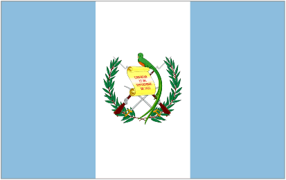

Lindsey Boj
About Me
My name is Lindsey and I play violin, I'm a student in BYU-Idaho University, Im studing Software Development. I was born in Quetzaltenango, Guatemala. I am currently working with my parenths as a medical representative. Love to spend time with my family, I love my brothers and my parents even if sometimes is hard for me to show that, I want to improve by them side and become an eternal family.
Guatemala

Guatemala, oficialmente la República de Guatemala, es un país soberano situado en el extremo noroccidental de Centroamérica, conocido por su rica herencia Maya, exuberante vegetación (su nombre significa "lugar de muchos árboles" en náhuatl) y relieve montañoso.